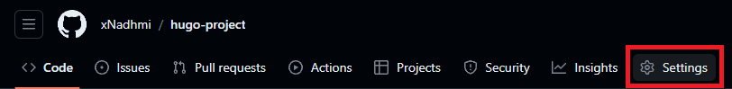

Introduction à Hugo et aux pages GitHub
Table des matières
Leçon : Introduction à Hugo et aux pages GitHub
Introduction
Dans la leçon d’aujourd’hui, nous allons explorer le puissant générateur de sites statiques, Hugo, et apprendre à utiliser GitHub Pages pour héberger notre site généré par Hugo. Que vous soyez débutant ou que vous cherchiez à améliorer vos compétences, cette leçon couvrira les éléments essentiels pour vous permettre de démarrer et de passer au niveau supérieur.
Qu’est-ce que Hugo ?
Hugo est un générateur de site statique rapide et flexible écrit en Go. Il vous permet de créer des sites web facilement, en fournissant un moyen simple et efficace de gérer le contenu. Contrairement aux systèmes de gestion de contenu dynamique, Hugo génère des fichiers HTML statiques, ce qui rend votre site rapide, sécurisé et facile à déployer.
Installation de Hugo
Installation
- Téléchargez Hugo depuis le [site officiel] (https://gohugo.io/getting-started/installing/).
- Suivez les instructions d’installation pour votre système d’exploitation.
Créer un nouveau projet Hugo
hugo new site monblog
cd monblog
Choisir un thème
Hugo supporte différents thèmes. Choisissez-en un et ajoutez-le à votre configuration :
git init
git submodule add https://github.com/budparr/gohugo-theme-ananke.git themes/ananke
echo 'theme = "ananke"' >> hugo.toml
Créer votre premier contenu
hugo new posts/my-first-post.md
Editez le fichier Markdown nouvellement créé pour ajouter du contenu.
Utilisation avancée d’Hugo
Personnalisation des thèmes
- Explorez la documentation du thème.
- Modifiez les fichiers du thème dans le répertoire
themesde votre projet pour personnaliser la mise en page et le style.
Shortcodes et widgets
Améliorez votre contenu avec des [shortcodes] (https://gohugo.io/content-management/shortcodes/) et des widgets interactifs.
Taxonomies
Organisez votre contenu avec des taxonomies, telles que des étiquettes et des catégories.
Hébergement avec GitHub Pages
Configurer le dépôt GitHub
- Créez un nouveau dépôt sur GitHub.
- Pousser votre projet Hugo vers le dépôt.
Configurer GitHub Actions
Pour configurer le site à publier avec GitHub Actions :
- Dans GitHub, accédez au dépôt de votre site.
- Sous le nom de votre dépôt, cliquez sur Paramètres. Si vous ne voyez pas l’onglet « Paramètres », sélectionnez le menu déroulant, puis cliquez sur Paramètres.

- Dans la section « Code et automatisation » de la barre latérale, cliquez sur Pages.
- Sous « Générer et déploiement », sous « Source », sélectionnez GitHub Actions.

- GitHub propose plusieurs workflows de démarrage. Vous pouvez simplement cliquer sur parcourir tous les flux de travail, puis rechercher Hugo et le configurer.

GitHub Pages n’associe pas de workflow spécifique aux paramètres GitHub Pages. Toutefois, les paramètres GitHub Pages sont liés à l’exécution du workflow qui a déployé votre site le plus récemment.
Un exemple de ce à quoi le fichier .github/workflows/hugo.yml ressemblerait :
name: Build and Deploy
on:
push:
branches:
- main
jobs:
deploy:
runs-on: ubuntu-latest
steps:
- name: Checkout Repository
uses: actions/checkout@v2
- name: Setup Hugo
uses: peaceiris/actions-hugo@v2
- name: Build
run: hugo --minify
- name: Deploy to GitHub Pages
uses: peaceiris/actions-gh-pages@v3
with:
publish_dir: ./public
github_token: ${{ secrets.GITHUB_TOKEN }}
Votre site Hugo est maintenant en ligne sur GitHub Pages ! À présent, toute modification apportée à la branche principale entraînera la mise à jour automatique de l’interface de votre site web.